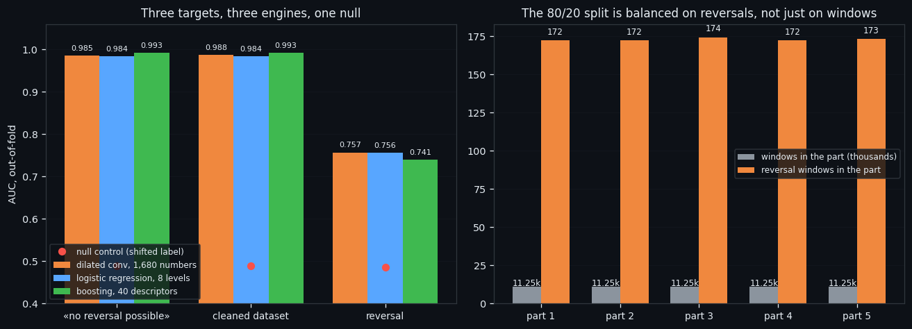
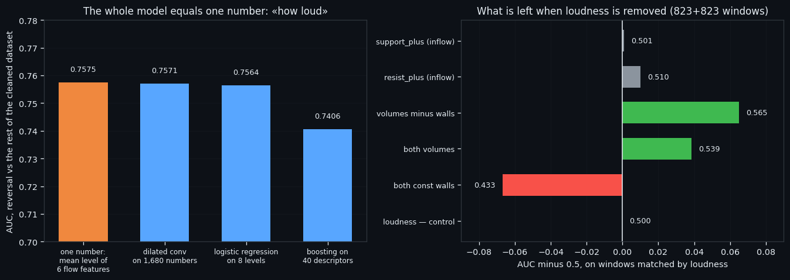
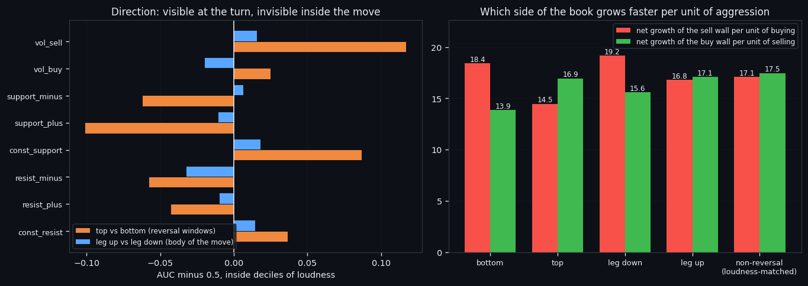
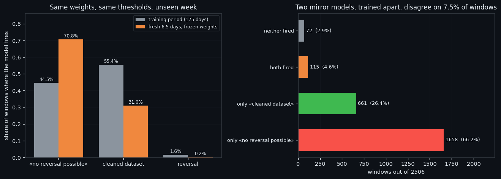

We Taught a Network to See a Move. It Only Heard How Loud It Was.
We trained three networks on the same 56,263 order-book windows and learned two things we did not want to learn. A single number — how loud the window is — matches a convolutional network on all 1,680 of them (0.7575 against 0.7571). And once you match windows by that number, the inflow features that carried the whole model separate nothing at all. What does survive is small, directional, and points at a different kind of bot than the one we set out to build.
Full walkthrough — streamed from YouTube.
① Three targets and an honest split
We had a cleaned dataset and no idea whether the cleaning meant anything. The chain that produced it — density clustering, then k-means, then k-means again — threw away 25,051 of 56,263 windows and kept 823 of 863 reversal windows. So the discarded part earned a name: «no reversal possible». Over 175 days it contains 40 reversal windows in total.
Three networks, one recipe. Each sees exactly 1,680 raw numbers of a 210-second window — no price, no time of day, no normalisation against history, no answers from other detectors.
| target | windows | positives | base rate | |---|---|---|---| | «no reversal possible» | 56,263 | 25,051 | 44.52% | | cleaned dataset (the mirror) | 56,263 | 31,212 | 55.48% | | reversal, inside the cleaned data | 31,212 | 823 | 2.64% |
The split matters more than the architecture. The timeline is cut into 50 contiguous chunks of equal window count, and the chunks are dealt into five parts so that each part holds a proportional number of reversals — not just a proportional number of windows. The result: 11,253-11,252 windows and 172-174 reversal windows per part. Each part is the test set once; a 30-minute embargo keeps the neighbouring window out of training, because a 210-second window is very close to its neighbour and without the embargo the model simply reads the answer off it.
Architecture is chosen by a grid of 18 configurations on a different split — screening parameters on the same folds you report is peeking.
Everything in this series feeds one goal: an automated trading bot that reads the order book instead of the price. Every number below is the honest, out-of-fold kind: each window scored by a model that never saw it.

② The ceiling: one number, and what is under it
The two mirror targets are learned almost perfectly. The reversal is not.
| target | dilated conv on 1,680 numbers | logistic regression on 8 levels | boosting on 40 descriptors | null control | |---|---|---|---|---| | «no reversal possible» | 0.9854 | 0.9840 | 0.9926 | 0.4885 | | cleaned dataset | 0.9877 | 0.9840 | 0.9926 | 0.4887 | | reversal | 0.7571 | 0.7564 | 0.7406 | 0.4851 |
Two things to say plainly. First, the network lost in all three targets — to boosting on 40 descriptors in the mirror pair, and to a logistic regression on eight numbers in the reversal task. Fourth line of this project to end that way.
Second, and more important: the mirror labels are a deterministic function of the same 1,680 numbers, so 0.99 proves nothing by itself. What it does prove is that the boundary holds on time the model never saw — the null control, the same label shifted along the time axis, sits at 0.488.
Then we measured the ceiling. One number — the mean level of the six flow features in the window, what we call loudness — separates a reversal from the rest of the cleaned dataset at AUC 0.7575. The network on all 1,680 numbers: 0.7571.
So we matched them. For each of the 823 reversal windows we picked a non-reversal window with the nearest loudness (3.9189 against 3.9188; the AUC of loudness itself is now exactly 0.500). Everything that survives that is no longer level — it is composition.
| measured on loudness-matched windows | AUC | |---|---| | the four inflow/outflow features | 0.510 — 0.501 (nothing) | | both const walls | 0.433 (thinner on a reversal) | | both volumes | 0.539 | | volumes minus walls | 0.565 |
The inflow — the thing carrying the entire performance of the current model — separates nothing once loudness is equalised. What is left of a reversal is thinner constant walls and slightly more volume, worth about 0.56 AUC.
Everything in this series feeds one goal: an automated trading bot that reads the order book instead of the price. A model whose skill equals a single average is not a model we can improve by making it deeper. That is why the next one will not be built on level at all.

③ Direction: invisible in the move, visible at the turn
If the book cannot tell a reversal from an ordinary loud moment, can it at least tell which way the market is going? We split the question in two, because the answers turn out to be opposite.
Inside the body of a move — nothing. 13,597 windows in an up-leg against 15,814 in a down-leg, loudness practically identical (3.350 against 3.327), and after correcting for it no feature moves further from 0.5 than 0.032. The order book does not know which half of the move it is in. That reproduces what a different line of this project found on 40 descriptors, by a different road.
At the turn itself — quite a lot. 407 tops against 416 bottoms:
| measured inside deciles of loudness | AUC towards the top | |---|---| | loudness — control | 0.507 | | vol_sell | 0.617 | | const_support | 0.587 | | both const walls | 0.569 | | support_plus | 0.399 (i.e. towards the bottom) |
The correction is not cosmetic. In the raw levels `vol_sell` is higher at bottoms (0.353 against 0.224) — because bottoms are simply louder events (4.029 against 3.807). At equal loudness the sign flips and selling volume marks the top. A textbook Simpson's paradox sitting in the middle of a trading dataset.
And one quantity tracks the direction of the move without being a shadow of loudness at all — the net growth of a wall per unit of aggression hitting it, `(inflow − outflow) / volume`:
| period | sell wall per unit of buying | buy wall per unit of selling | |---|---|---| | bottom | 18.42 | 13.87 | | leg down | 19.16 | 15.58 | | leg up | 16.80 | 17.09 | | top | 14.47 | 16.95 | | non-reversal, loudness-matched | 17.07 | 17.47 |
In a fall the sellers' wall rebuilds faster per unit of buying; in a rise, mirror image; in a matched ordinary moment, balance. In the quietest and the loudest subsets the gap is the same size, so this is not level in disguise.
Everything in this series feeds one goal: an automated trading bot that reads the order book instead of the price. This is the first directional quantity in the series that survives the loudness correction, and it points at a specific kind of bot: not one that predicts direction, but one that decides whether to keep holding.

④ A week the models had never seen
Everything above is measured on data the models were trained on, out of fold. The last check is different: 2,506 windows recorded after the dataset was frozen — 6.54 days the networks could not have seen, scored with frozen weights and frozen thresholds, nothing retrained, nothing recalibrated.
| model | fires on the fresh week | fired on the training period | |---|---|---| | «no reversal possible» | 70.75% | 44.50% | | cleaned dataset | 30.97% | 55.44% | | reversal | 0.16% | 1.57% |
The week reads, to the order book, as markedly less reversal-capable than the average of the dataset. We cannot check that against a label: the cleaning chain rests on density clustering, and density clustering cannot assign new points to old clusters. So on fresh data these two targets have a model answer and no ground truth — we report the frequency and nothing else.
What we can check is the two mirror models against each other. They were trained separately, on opposite labels, with different architectures chosen by different grids. On the fresh week they disagree on 187 windows out of 2,506 — 7.5%. That number is their own noise floor, and it is small.
A footnote worth keeping: in 6.5 days the 2.3% zigzag produced exactly one raw pivot and zero completed legs. Not a flat market — the price moved -3.10% — simply too short a stretch for alternating 2.3% legs. Anyone validating a reversal model on a week of data is validating it on one event.
What is next. The direction quantity from the previous section goes into a written specification — MOVE_HOLD.md, downloadable below — for a holding indicator rather than an entry signal: the trade is already open, and the question is whether the book still supports the move. The document states the metric (percentage of the leg captured, measured on 120 legs rather than on windows), the seven traps, a table of control numbers with tolerances, and the list of directions already closed so nobody re-opens them. Everything in this series feeds one goal: an automated trading bot that reads the order book instead of the price. And it names the number that would kill the idea: if the quantity falls inside the null control at the level of moves, the holding indicator closes exactly as direction prediction did.

If this changed how you read the tape, the natural next step is Volume Is the Fuel — Not the Steering Wheel — We recorded the Binance order book every second for six coins over five months and ran eighteen tests on what volume really does.
Volume Is the Fuel — Not the Steering Wheel
We recorded the Binance order book every second for six coins over five months and ran eighteen tests on what volume really does.
About Market Research Lab — What We Collect and Why
Most market commentary is storytelling.
From Calm to Calm: a Standard for What Counts as a Signal (BTC)
We stopped defining market signals with a stopwatch.
The Wall That Goes Quiet: What Resting Liquidity Predicts
We measured resting limit liquidity sitting on both sides of the book second by second across six coins, and asked the only question that matters:….
Comments
Discussion is powered by GitHub. Enable it by adding secrets/giscus.json (repo IDs from giscus.app).